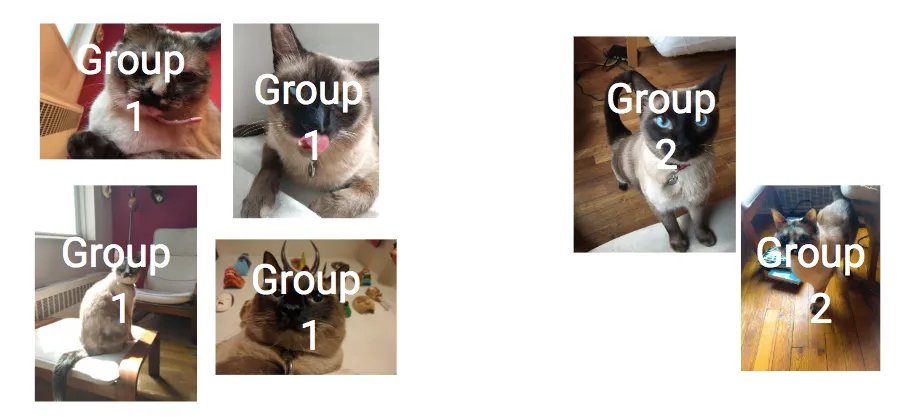
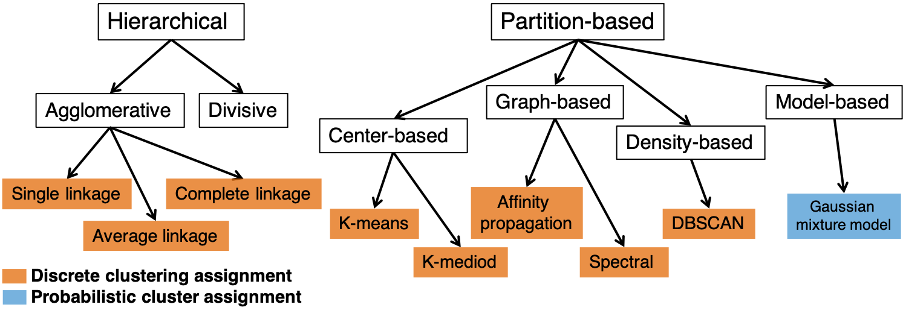
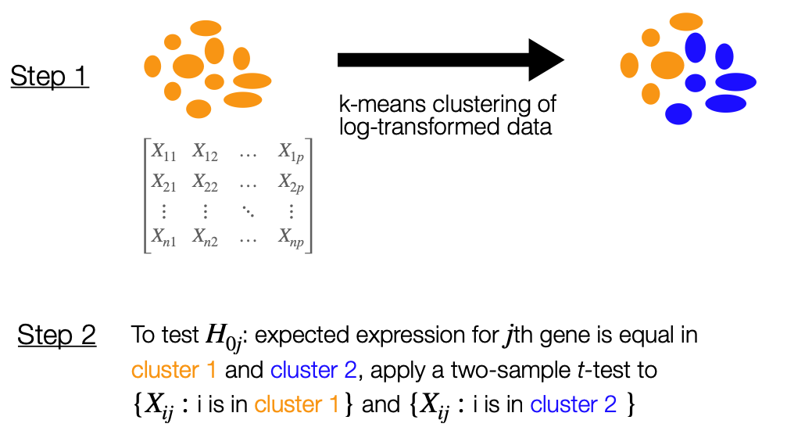

Unsupervised learning in biological data analysis: clustering
Lucy Gao (w/ slide support from Keegan)
March 14, 2023
Hello!

- My background: biostatistics by way of math/stats
- Unsupervised learning researcher since 2015 (has involved lots of clustering …)
Learning objectives
Understand the unsupervised learning setting
Understand why clustering is powerful, but hard to apply in biological data analysis
Understand high-level principles behind two well-known clustering algorithms:
- k-means clustering
- hierarchical clustering
Understand the challenges of doing statistical inference downstream of clustering
Unsupervised learning data setting
NCI-60 Human Tumour Cell Lines microarray data (~7000 genes, only 100 visualized)
- We have access to \(m\) features \(X_1, \ldots, X_m\) measured on \(n\) samples
- Represent as a matrix \(X\) with \(m\) rows (number of features) and \(n\) columns (number of samples)
- IMPORTANTLY: we don’t have access to anything other than this data matrix
What we can’t do in the unsupervised data setting
NCI-60 Human Tumour Cell Lines microarray data (~7000 genes, only 200 visualized)
- We don’t know the experiment design, sample phenotype, batch, etc.
- This greatly limits what we can do:
- We can’t quantify the association between \(X_1, \ldots, X_p\) and a response variable \(Y\)
- We can’t use \(X\) to predict a response variable \(Y\)
- We can’t (directly) compare populations represented in \(X\) with two-sample testing
What we can do in this data setting
Discover “interesting things” about the measurements we have
NCI-60 Human Tumour Cell Lines data set (~7000 genes, only 200 visualized)
Each sample’s measurements (column) are a vector in 7000-dimensional space
Each feature’s measurements (row) are a vector in 64-dimensional space
Look for possible “hidden structure” within samples and/or features:
- Dimension reduction: project samples/features onto lower-dimensional space
- Clustering: group the samples (columns) and/or group the features (rows)
Clustering problem definition:
Break a set of objects up into groups, so that objects within each group are more similar to each other than to objects in other groups
(Photo and idea credit: Cassie Kozyrkov)
Similar how?
We will define a numerical vector of attributes for each object
For a set of \(n\) objects, we will represent each object \(i\) \((i=1,...,n)\) as a numeric vector \(\boldsymbol{x}_i\) of length \(p\) (containing \(p\) attributes)
So each object \(i\) is represented by \(\boldsymbol{x}_i = (x_{i1}, x_{i2}, ..., x_{ip})\)
Now we can define the clustering problem more precisely:
Break a set of objects up into groups, so that attributes of objects within each group are more similar to each other than to attributes of objects in other groups
Attribute similarity
Is this precise enough?
Break a set of objects up into groups, so that attributes of objects within each group are more similar to each other than to attributes of objects in other groups
We also need to define a formula to describe similarity between attribute vectors \(\boldsymbol{x}_i\)
- We call this a measure of similarity
Equivalently, we can define a formula to describe dissimilarity between attribute vectors \(\boldsymbol{x}_i\)
- This is convenient because we can use distance metrics (e.g. Euclidean, Manhattan)
Eg. define small Euclidean distance to mean “similar”
Euclidean distance between two vectors of \(p\) attributes \(\boldsymbol{x}_1\) and \(\boldsymbol{x}_2\):
\[D_{euc}(\boldsymbol{x}_1, \boldsymbol{x}_2) = || \boldsymbol{x}_1 - \boldsymbol{x}_2 ||_2 = \sqrt{\sum_{j=1}^p (x_{1j} - x_{2j})^2}\] In two dimensions:

Euclidean distance: should we scale?
Euclidean distance between two vectors of \(p\) attributes \(\boldsymbol{x}_1\) and \(\boldsymbol{x}_2\):
\[D_{euc}(\boldsymbol{x}_1, \boldsymbol{x}_2) = || \boldsymbol{x}_1 - \boldsymbol{x}_2 ||_2 = \sqrt{\sum_{j=1}^p (x_{1j} - x_{2j})^2}\]
If the \(p\) attributes have vastly different ranges/units, then some of the attributes will have a way bigger impact on the Euclidean distance than others
If we think that’s a bad thing, then we could scale each vector of attributes to have standard deviation 1
But whether or not it’s a bad thing is highly context dependent
Eg. define large Pearson correlation to mean “similar”
Pearson correlation between two vectors of \(p\) attributes \(\boldsymbol{x}_1\) and \(\boldsymbol{x}_2\):
\[r_{\boldsymbol{x}_1, \boldsymbol{x}_{2}} = Cor(\boldsymbol{x}_1, \boldsymbol{x}_{2}) = \frac{Cov(\boldsymbol{x}_1, \boldsymbol{x}_{2})}{\sqrt{Var(\boldsymbol{x}_1)Var(\boldsymbol{x}_{2})}}\]
In the plot below, attribute vectors 1 and 2 have large Pearson similarity (they “move together”)

Euclidean distance and Pearson similarity for standardized attributes
If attribute vectors are standardized (centre and scaled), then:
\[r_{\boldsymbol{x}_1, \boldsymbol{x}_{2}} = \sum_{j=1}^p x_{1j}x_{2j}\]
We can now see that: \[D_{euc}^2 (\boldsymbol{x}_1, \boldsymbol{x}_{2}) = \sum_{j=1}^p (x_{1j} - x_{2j})^2 = \sum_{j=1}^p x_{1j}^2 + \sum_{j=1}^p x_{2j}^2 + 2\sum_{j=1}^p x_{1j}x_{2j} = 2(1-r_{\boldsymbol{x}_1, \boldsymbol{x}_{2}})\]
Clustering for visualization and data exploration
NCI-60 data: centered and scaled
Columns and rows clustered and re-ordered
What do these clusters mean?
At face value
- Column clusters:
- Samples with similar feature measurements
- Specific definition of “similar” (e.g. small Euclidean distance)
- Row clusters:
- Features that move together
- Specific definition of “moving together” (e.g. high Pearson correlation)
Speculating further
- Column clusters:
- Samples from different batches?
- Samples from “real” underlying populations?
- Row clusters:
- Features that really work together or belong together?
A famous success story: clustering samples in microarrays
Key finding of Sørlie et al. 2001: “Gene expression patterns of breast cancer carcinomas distinguish tumor subclasses with clinical implications”
A famous success story: clustering genes in microarrays
Key finding of Eisen, et al. (1998): “Clustering gene expression data groups together efficiently genes of known similar function”
- Columns combine time courses of gene expression in yeast
- Row/gene clusters are highlighted
- Genes in clusters have similar functional annotations - involved in common cellular processes
But be cautious: there are many ways to not succeed
There might be very little heterogeneity in the data
2D toy example: clustering pure noise samples

If there is heterogeneity in the data:
Subgroups might not be the best explanation for it
2D toy example: clustering samples from a simple linear model

Even if subgroups are a good explanation:
Our definition of similarity could be problematic
Our clustering from before
What I actually care about
(Photo and idea credit: Cassie Kozyrkov)
The fundamental frustration: we have no labelled data
- This makes it hard to check our work statistically
- Be cautious when interpreting your clustering results
- Gather other corroborating information whenever you can
- Prior information, experience, and domain knowledge are huge assets here!
There are many clustering algorithms

k-means clustering
One of the most widely used partition-based clustering approaches
Partition-based (flat), and discrete
Main idea: minimize the sum of within-cluster variation
Let \(G_k\) be a set containing the objects assigned to cluster \(k\), for \(k = 1, 2, \ldots K\).
We want to find non-overlapping sets \(G_1, \ldots, G_K\) that minimize:
\[ \sum \limits_{k=1}^K W(G_k)\]
Typically, we define within-cluster variation \(W(G_k)\) with squared Euclidean distance: \[ W(G_k) = \frac{1}{|G_k|} \sum_{i, i' \in G_k} \| \boldsymbol{x}_i - \boldsymbol{x}_{i'}\|_2^2 = \frac{1}{|G_k|} \sum_{i, i' \in G_k} \sum \limits_{j=1}^p (x_{ij} - x_{i'j})^2 \]
More on the K-means objective function
The optimization problem that defines k-means clustering is therefore: \[ \underset{G_1, \ldots, G_K}{\text{minimize}} ~~ \left \{ \sum \limits_{k=1}^K \frac{1}{|G_k|} \sum_{i, i' \in G_k} \sum \limits_{j=1}^p (x_{ij} - x_{i'j})^2 \right \} \]
It turns out that:
\[ \frac{1}{|G_k|} \sum_{i, i' \in G_k} \sum \limits_{j=1}^p (x_{ij} - x_{i'j})^2 = 2 \sum \limits_{i \in G_k} \sum \limits_{j=1}^p (x_{ij} - \bar{x}_{kj})^2, \] where \(\bar{x}_{kj} = \frac{1}{|G_k|} \sum \limits_{i \in G_k} x_{ij}\) is the mean for attribute \(j\) in cluster \(G_k\).
So another interpretation of this optimization problem is that we want to minimize the sum of within-cluster distances to cluster centres.
Algorithm: k-means clustering
(Helpful illustrated example by Allison Horst)
Initialize: Pick \(K\) random points as initial cluster centres
- Measure distance (squared Euclidean) between all points and the cluster centres
- Assign points to nearest cluster
- Update cluster means
We repeat until cluster assignments stop changing.
This algorithm does not guarantee that you reach the global minimum value of the k-means objective function! Use multiple random initializations, then pick the clustering result that gives you the smallest k-means objective function.
When might you want a hierarchical approach instead?
Sometimes, a hierarchical organization just makes more sense:

(Picture by Chelsea Parlett-Pelleriti)
More pragmatically, sometimes we don’t want to pre-specify the number of clusters \(K\)
Agglomerative hierarchical clustering
Agglomerative: in the algorithm, each observation starts in its own cluster; going up in hierarchy pairs of clusters are merged

Note: vertical red bar ‘cuts’ the tree to define the clusters indicated by label colours
How to use a dendrogram
- Each leaf is one of the 9 objects, and as we move up the tree, leaves fuse into branches
- The height where branches containing two objects is the dissimilarity between them
- Note: horizontal proximity is meaningless. We use vertical proximity to measure similarity
- Cutting the dendrogram horizontally at a given height yields (hierarchically nested) clusters
Algorithm: Hierarchical agglomerative clustering
(Helpful illustrated example by Allison Horst)
Given \(n\) objects with \(p\) attributes and a distance metric:
Initialize: Treat each object as its own cluster and compute pairwise distances between all clusters
Iterate: Repeat steps 1 and 2 until all objects belong to a single cluster
Find the “closest” pair of clusters, and merge them into a single cluster
Compute new distances between clusters
But what’s the distance between the cluster {1, 2, 3} and the cluster {8, 9} on the last slide?
We need the concept of “linkage”
Linkage extends the notion of distance between two observations (a distance metric, like Euclidean distance) to a notion of distance between groups of observations
Common linkages:
Single linkage: distance between two clusters is the minimum distance between any pair of elements
Average linkage: distance between two clusters is the average distance between all pairs of elements
Complete linkage: distance between two clusters is the maximum distance between any pair of elements
Different linkages can give very different results
What’s the distance if we use:
Single linkage?
Average linkage?
Complete linkage?
(Image and idea credit to Chelsea Parlett-Pelleriti)
In general, there’s no “right” or “wrong” linkage.
But, a reasonable heuristic is to use average and complete over single linkage, since they tend to give more balanced dendrograms
Choosing the number of clusters \(K\)
Note: picking \(K\) to minimize (say) the sum of the within-cluster variations will not be informative, as it leads to the solution that each object should be in its own cluster. Therefore, need a method that takes into account the “cost” of adding additional clusters
Prior knowledge
“Elbow” method: point of diminishing returns
Information Criteria (AIC or BIC): likelihood penalized for number of parameters
Silhouette metric: how similar an object is to its own cluster compared to other clusters
Gap Statistics: total within-cluster variation compared to that expected under the null
Pragmatic advice: Try all the things, get a fuller picture
- Try using different combinations of attributes
- Try using different measures of similarity
- Try different ways of standardizing the data
- Try using different algorithms
- Try using a different number of clusters
- Try using different linkages
- Try clustering subsets of the objects
Inference after clustering: it’s tempting
Suppose you clustered samples into two groups.
Follow-up questions:
- Are these clusters associated with a feature that wasn’t used for clustering (\(Y\))?
- Were these clusters really sampled from different populations?
- If so, then which features are actually different across these populations?
Attempts to answer them:
Two group comparisons test on measurements of \(Y\)
Two group comparisons test on measurements of \(X_1, \ldots, X_p\)
For \(j = 1, \ldots, p\), two group comparisons test on measurements of \(X_j\)
Unfortunately, this can get you in big trouble for questions 2 & 3
The key difference: circularity/double-dipping
Recall how we tried to answer the three questions:
- Two group comparisons test on measurements of \(Y\), with clusters as groups
- Two group comparisons test on measurements of \(X_1, \ldots, X_p\), with clusters as groups
- For \(j = 1, 2, \ldots, p\), two group comparisons test on measurements of \(X_j\), with clusters as groups
There’s circularity in questions 2 and 3!
- In questions 2 and 3, we used the same data set to define groups (\(X\)) and to test for a difference between groups (\(X\))
Compare to question 1: no circularity
- In question 1, we used different data sets to define groups (\(X\)) and to test for a difference between groups (\(Y\))
Intuition: why is circularity/double-dipping bad?
- When we choose a hypothesis to test after looking at our data, then we often wind up cherry-picking one that seems to be supported by our data
Recall: roughly speaking, p-values measure how surprised we are to observe such an extreme test statistic
When we cherry-pick, we will get more extreme test statistic values by chance alone even if the null hypothesis is true, so it should be harder to surprise us
Unless this fact is taken into account, we are going to exaggerate the amount of evidence against the null hypothesis (i.e. p-values are going to be too small)
Visual illustration of what can go wrong
Sample 50 observations from a single population
Cluster the observations with k-means clustering
Two-sample \(t\)-test to compare feature 1 across clusters: p-value = 4.28^{-4}
Two-sample \(t\)-test to compare feature 2 across clusters: p-value = 4.03^{-7}
p-values are too small, because we’ve cherry-picked two groups to compare via clustering
Compare to: sampling from two populations with the same mean for features 1 and 2
Sample 25 observations from a population for group 1
Sample 25 observations from another population (with the same population means) for group 2
Two-sample \(t\)-test to compare feature 1 across groups: p-value = 0.117
Two-sample \(t\)-test to compare feature 2 across groups: p-value = 0.316
p-values are not too small, because we didn’t do any cherry-picking
Comparing the distributions of the mean differences
Recall: Numerator of two-sample \(t\)-test statistic for feature 1
Mean of feature 1 in group 1 - Mean of feature 1 in group 2

An extreme exception where there’s no problem
Sample 25 observations from two very different populations
Ignore population labels and cluster all the observations with k-means clustering
Two-sample \(t\)-test to compare feature 1 across clusters: p-value = 2.4^{-33}
Two-sample \(t\)-test to compare feature 2 across clusters: p-value = 2.04^{-35}
These results will look the same as if we used true population labels
Double-dipping is particularly relevant to scRNA-seq
Marker gene detection and cell type annotation

Pragmatic advice
Ask yourself: how strong and unambiguous is the signal?
If the grouping signal is strong and unambigous enough that clustering output is close to deterministic (i.e. not random), then go ahead and “double-dip”
Otherwise, double-dipping can get you into trouble
Without a lot of prior information and domain knowledge, there’s no way of knowing which case you’re in
My $0.02: if you don’t feel confident in prior information/domain knowledge, then it’s safer to just avoid double-dipping
Summary of unsupervised learning and clustering
Many choices to make when you want to cluster a set of objects:
- Objective, algorithm, attributes/features, distance metric, number of clusters
There is no “best” method - it all depends on data and goal
Clustering is very powerful, but reckless application leads to misguided conclusions
Be especially careful when performing statistical inference with clustering outputs